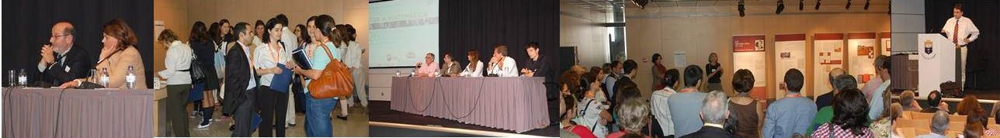
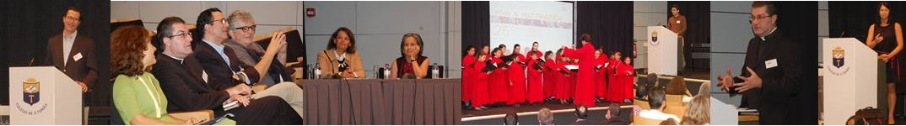
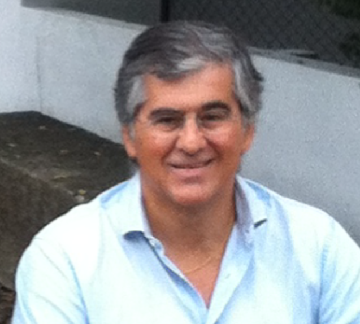
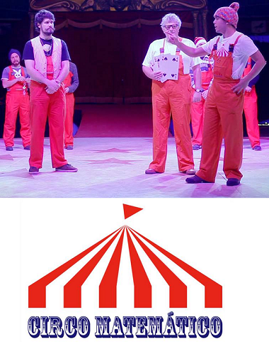
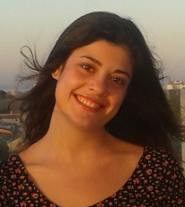
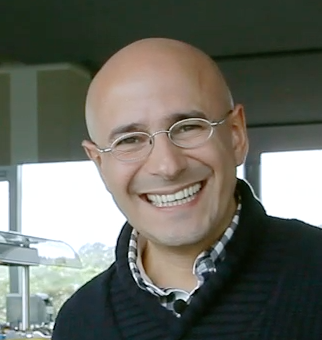

- 
- 
|  |
António Bivar Doutorado em Matemática (1982), foi docente da Faculdade de Ciências da Universidade de Lisboa entre 1975 e 2009 (ano em que se aposentou), professor associado desde 1987; foi docente da Universidade Lusíada entre 2009 e 2013. Tem publicações na área dos operadores diferenciais lineares da Física-Matemática e é autor de manuais universitários na área da Análise Matemática e Teoria do Operadores. Foi presidente do Departamento de Matemática da FCUL de 1993 a 1995 e durante cinco anos coordenador dos mestrados em Matemática para o Ensino e depois em Matemática para Professores da FCUL. Foi co-autor do Programa e Metas Curriculares de Matemática para o Ensino Básico de 2013 e do Programa e Metas Curriculares de Matemática-A para o Ensino Secundário de 2014. |
|  |
Circo Matemático O Circo Matemático, secção autónoma da Associação Ludus, nasceu em 30 de Janeiro de 2011. Desde essa data que pretende maravilhar, divertir e atrair pessoas de qualquer idade para a matemática mediante a realização de actividades lúdicas variadas e sofisticadas. Mais do que qualquer outra coisa, a magia matemática é mostrada e levada à cena. Esta abordagem circense tem sido bastante bem sucedida – uma pequena ilustração do conceito pode ser vista aqui: Circo Matemático | Jorge Nuno Silva | TEDxLisboaED |
|  |
Joana Teixeira
A minha paixão por matemática já vem desde o 5º ano, e no 7º tornei-me também apaixonada por física. Tendo concluindo o secundário no Colégio de São Tomás em 2013, segui para Londres, onde estou agora a estudar no Imperial College. Terminei o segundo ano do curso de física com física teórica, do qual estou a gostar imenso. O que mais me fascina é o facto de, em física, se tentar explicar aquilo que acontece usando matemática, como se o próprio mundo “pensasse” nesta linguagem, mas dando-lhe sempre o sentido físico daquilo que se observa. |
|
Luís Pedro Duarte
Sempre gostei de matemática, mas foi no 9º ano, quando cheguei mais longe nas olimpíadas e entrei para o projecto Delfos onde comecei a ter contacto com pessoas que sabiam muito mais que eu do assunto, que desenvolvi um verdadeiro gosto pela matemática. Fiz parte da equipa portuguesa nas Olimpíadas Internacionais por 3 anos e nas Iberoamericanas por 2 anos, tendo obtido várias medalhas. Vou agora entrar para o 3º ano do curso de Matemática Aplicada e Computação no IST, com o objectivo de no futuro vir a ser um professor universitário e investigador numa área da matemática que me agrade.
|
|
|
Lurdes Figueiral
Licenciada em Matemática pela faculdade de ciências da Universidade do Porto onde também realizou o Mestrado em Matemática para Professores que finalizou com uma dissertação sobre alguns aspetos que relacionam a Matemática com a Arquitetura, denominada Da beleza buscada à beleza construída: medidas e formas da beleza.
|
|
Máximo Ferreira Máximo Ferreira é físico com especialização em Astronomia (FCUL) e mestre em Museologia (Deutches Museum). É Diretor do Centro Ciência Viva de Constância-Parque de Astronomia e membro fundador da ASTRO-Associação Portuguesa para o Ensino da Astronomia. É autor de vários livros como O Pequeno Livro da Astronomia ou Para a História da Astronomia em Portugal. É co-autor da Introdução à Astronomia e às Observações Astronómicas, já na sétima edição. | |
Pedro Freitas Pedro J. Freitas é Professor Auxiliar do Departamento de Matemática da Faculdade de Ciências da Universidade de Lisboa. Doutorou-se em Matemática, em 1999, na University of Illinois at Chicago. Para além de trabalho de regência de cadeiras e investigação em matemática, fundamentalmente em áreas de álgebra, dedica-se também a assuntos de divulgação, ensino e matemática recreativa. | |
|  |
Rogério Martins Rogério Martins é o autor e apresentador do programa “Isto é matemática” na SIC Notícias, um programa totalmente dedicado à divulgação da Matemática, que foi nomeado para um prémio da Sociedade Portuguesa de Autores, na categoria de Melhor Programa de Entretenimento em Televisão, recebeu a Homenagem especial Ver Ciência 2013 no Brasil e o Prémio Ciência Viva – Montepio. É também a voz dos vídeos da Khan Academy Portugal, um conjunto de vídeos pedagógicos cuja tradução está a ser apresentada pela Fundação Portugal Telecom. Foi considerado, pelo jornal Expresso, um dos 100 portugueses mais influentes de 2012.
|